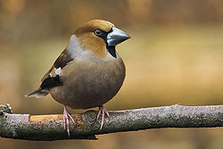
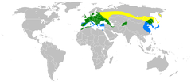
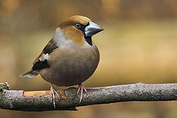
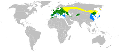

| Hawfinch | |
|---|---|
|  | |
| Conservation status | |
| Binomial name | |
| Coccothraustes coccothraustes (Linnaeus, 1758) |
|
|  | |
| Ranges of C coccothraustes Summer Resident Winter |
| Hawfinch | |
|---|---|
|  | |
| Conservation status | |
| Binomial name | |
| Coccothraustes coccothraustes (Linnaeus, 1758) |
|
|  | |
| Ranges of C coccothraustes Summer Resident Winter |
The Hawfinch, Coccothraustes coccothraustes, is a passerine bird in the finch family Fringillidae. Its closest living relatives are the Evening Grosbeak (C. vespertinus) from North America and the Hooded Grosbeak (C. abeillei) from Central America especially Mexico.
This bird breeds across Europe and temperate Asia. It is mainly resident in Europe, but many Asian birds migrate further south in the winter. It is a rare vagrant to the western islands of Alaska.
Deciduous or mixed woodland ,including parkland, with large trees - especially Hornbeam - is favoured for breeding,. The Hawfinch builds its nest in a bush or tree, and lays 2-7 eggs. The food is mainly seeds and fruit kernels, especially those of cherries, which it cracks with its powerful bill. This large finch species is usually seen in a pair or small group.
The 16.5–18 cm long Hawfinch is a bulky bull-headed bird, which appears very short-tailed in flight. Its head is orange-brown with a black eyestripe and bib, and a massive bill, which is black in summer but paler in winter. The upper parts are dark brown and the underparts orange.
The white wing bars and tail tip are striking in flight. The sexes are similar. The call is a hard chick. The song of this unobtrusive bird is quiet and mumbled.

{kind=link}
{kind=link}